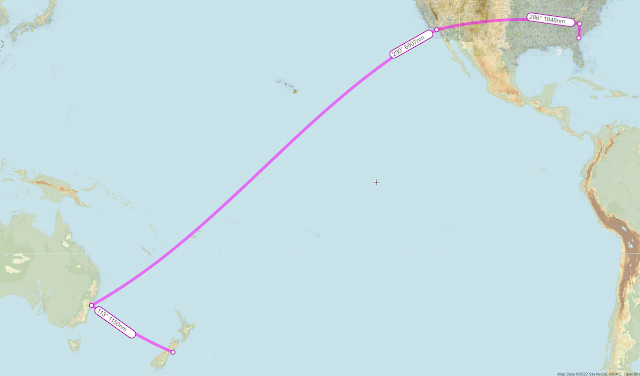
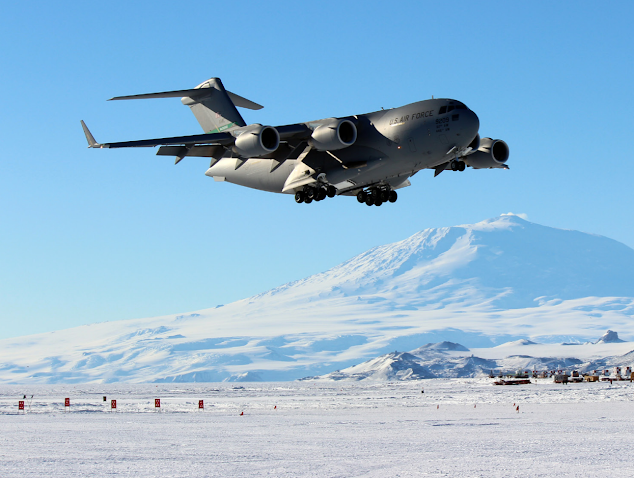
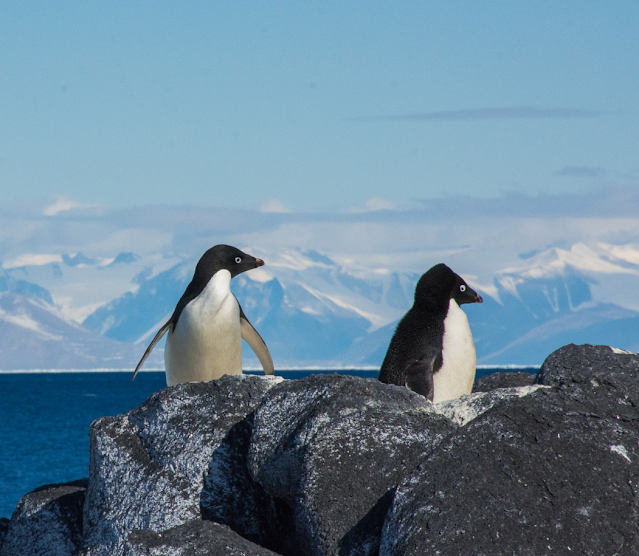

Longren Antarctic Newsletter #00 - 10.10.2022 ------------------------------ Dearest people,Welcome to the start of my newsletter, I hope that you all are doing well. This will just be a fun way for me to keep you updated with what I am doing in the Antarctic. What you might expect includes: work tea, polar fun facts, and penguin photos (to name a couple things).  My route from Georgia, USA to Christchurch, NZ. That's a lot of ocean! Currently, I have been in Savannah, Georgia, USA visiting some family over the weekend. On Monday morning, I start heading for Sydney, Australia, where I arrive on Wednesday after crossing over the international date line. From there, a final commercial flight to Christchurch, New Zealand, where I arrive on Thursday. There, I will pick up my heavy polar clothing and take part in some initial polar training remotely from my hotel. On Friday, it will be a final flight on a cargo plane to McMurdo Station in Antarctica.  A C-17 landing near McMurdo. (Jack Green) While in Antarctica, I'll be mainly managing cargo in and out of large LC-130 and C-17 aircraft. In the summer at McMurdo, the average temperature ranges from -19°C in October all the way up to -3°C in January. A heart warming cold. The area past 66.5 degrees south latitude, which includes much of the Antarctic continent, experiences a single summer day and a single winter night, with weeks of sunrise and sunset between the two.  Adélie penguins at Ross Island. (Mike Lucibella) With excitement, Luke ------------------------------ |